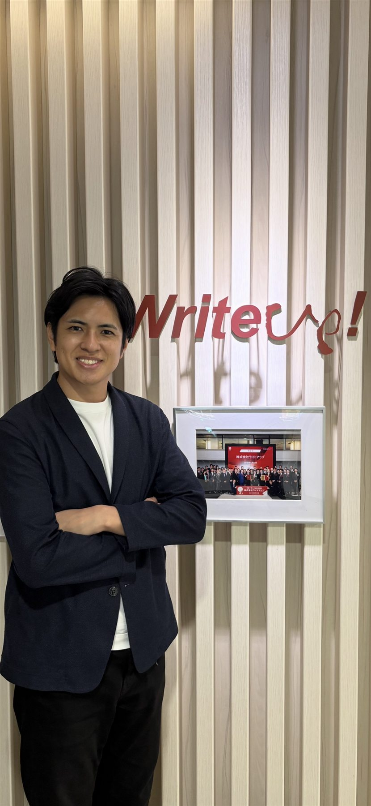
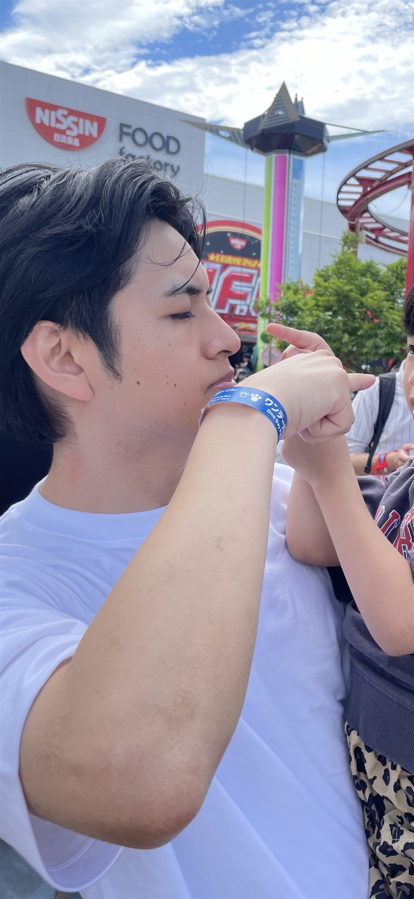
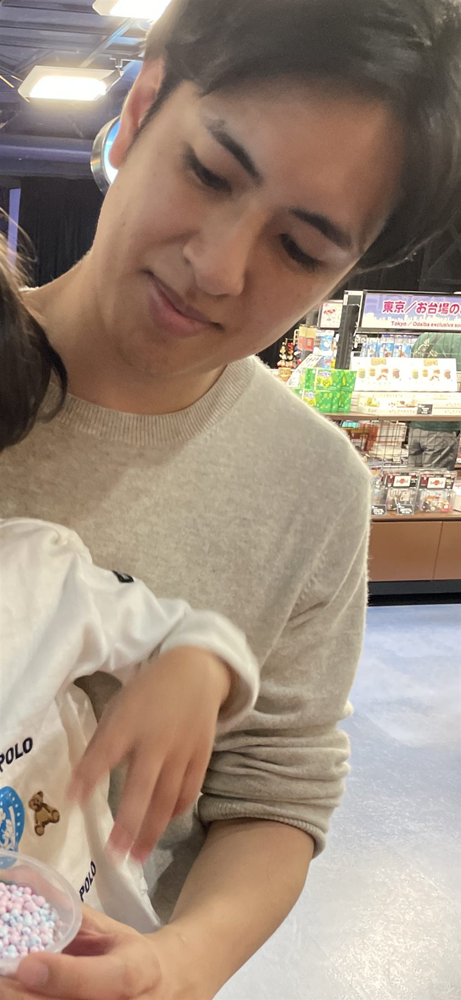

「知らなかった」で終わらせない
使える可能性のある制度を、必要な企業へわかりやすく届ける。まずは選択肢を知ってもらうことを大切にしています。

SUPPORTING BUSINESS CHALLENGES
補助金・助成金は、企業のチャレンジを支えるための制度です。知らないままにせず、難しいからと諦めず、使えるものは、ぜひ使ってほしい。私はその選択肢を、わかりやすく届けます。
助成金・補助金の現場に、新卒から一筋。
About Me
1991年、東京都足立区生まれ。自分で言うのもなんですが、性格はかなりまじめな方です。一方で、人を笑わせたり、みんなで楽しい時間をつくったりすることも好きです。
大学では外国語学部で英語を学びながら、「ユーモアを通じて世界の文化を研究する」ゼミへ。人によって笑うところが違う。その違いを面白がる経験は、いま相手の話を聞き、考えを理解する仕事にもつながっています。
My Mission
日本には、企業の挑戦を後押しする助成金・補助金があります。しかし、制度を知らない、難しそうで踏み出せない、申請に割く時間がない。そんな理由で、本来使えるはずの支援を逃している企業は少なくありません。
私は、すべての企業が「制度を活用する」という選択肢を持てるようにしたい。国からの支援を原資に、採用や設備投資、IT化、新規事業を前へ進めてほしい。申請書をつくることではなく、その先で事業が動くこと。それが、補助制度を使う本当の意義だと考えています。
経営者へ制度活用を伝えたセミナー
営業・カスタマーサポート・AI
新卒から一筋、ライトアップ
What I Believe
制度は複雑です。だからこそ、ただ情報を並べるのではなく、その企業が何を実現したいのかを理解し、使える形にするところまでが私の役割だと考えています。
使える可能性のある制度を、必要な企業へわかりやすく届ける。まずは選択肢を知ってもらうことを大切にしています。
採用、設備、IT、新規事業。制度ありきではなく、本当に実現したい投資から考えます。
AIを活用して申請業務の負担を減らし、企業も支援者も、本来向き合うべき仕事に集中できる環境をつくります。
国の支援金を、御社の成長につながる具体的な行動へ変える。そのために、制度と現場の間に立ち、わかりやすく、誠実に伴走します。
Career
提案する人、届ける人、支える人。そして今は、仕組みそのものを変える人へ。営業だけでなく、申請支援の体制づくりとAIによる効率化まで、制度活用の一連の現場を経験してきました。
外国語学部で英語を専攻。ユーモアを通じて世界の文化を研究し、フィジーにも2週間の短期留学。人の違いを面白がる視点は、いまの対話の原点です。
ENGLISH / HUMOR株式会社ライトアップへ入社。ちょうど事業が始まった時期から、企業へのコンサルティング提案に携わりました。
SALES北陸・中国地方・沖縄を担当し、約300回のセミナーを実施。難しく見える制度を、経営者が「自分ごと」にできる言葉で伝えてきました。
SEMINAR / CONSULTINGより確かな申請支援体制をつくるため、カスタマーサポート部署の責任者へ。お客様の声を受け止め、組織として応える仕組みを整えました。
CUSTOMER SUCCESS現在は、社会保険労務士の皆さまに向けて、AIによる申請業務の自動化を推進。積み重ねてきた現場知を、新しい技術につないでいます。
AI / AUTOMATION
My Values
助成金・補助金は、お客様の大切な投資判断に関わる仕事です。制度の説明だけで終わらず、何を実現したいのかを理解し、同じ方向を向いて進むことを大切にしています。
制度もAIも、使う人に伝わってこそ価値になる。
制度ありきではなく、実現したい事業から逆算する。
大切な投資判断を任せていただく責任を忘れない。
Off Time
仕事を離れれば、最近いちばん楽しいのは6歳の息子と過ごす時間。虫と恐竜と植物の成長を追いかけています。

ミニトマト、大葉、バジル、ディル、シャインマスカット、さくらんぼ。最近はハラペーニョも育成中。
ベランダのビオトープでメダカを飼育中。次はどんな生き物を迎えようか、思案しています。
虫や恐竜のイベントへ出かけたり、人生ゲームやカードゲームで真剣勝負したり。
御社の次の一歩に、
使える制度を。
制度の現場と企業の挑戦をつなぎ、事業を前へ進めます。